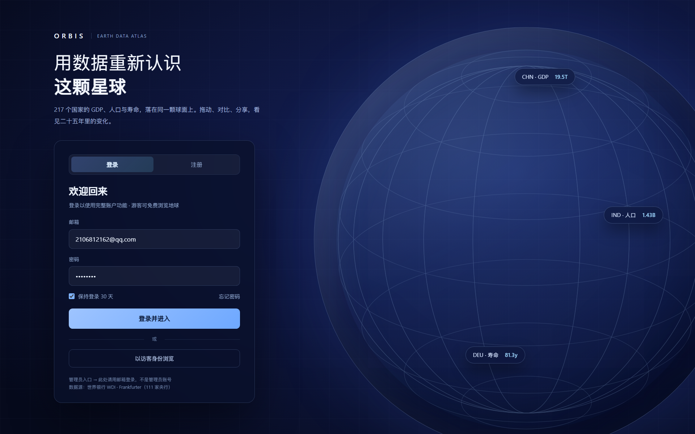
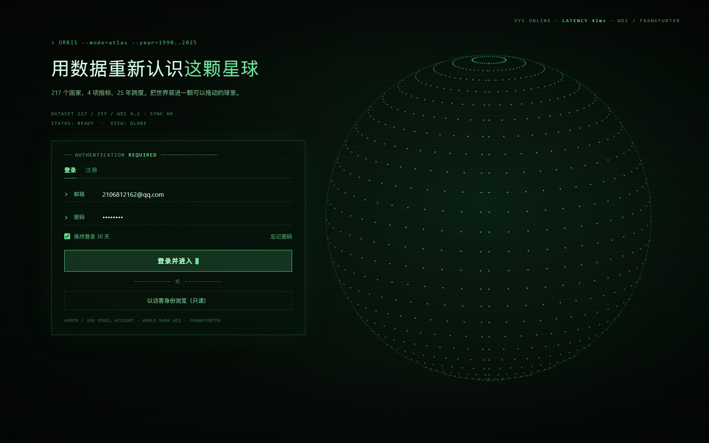
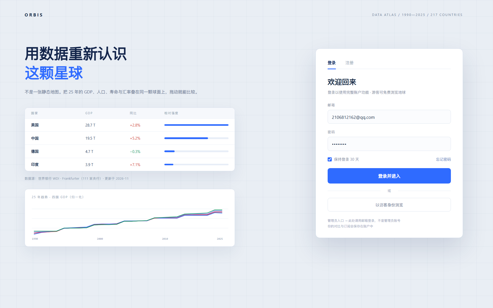
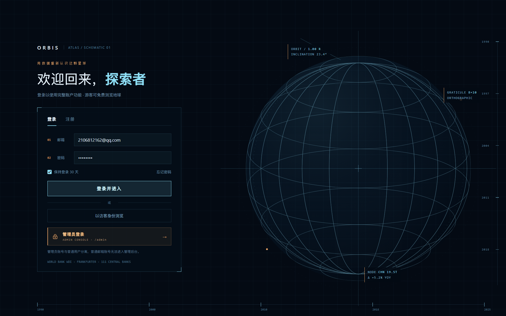
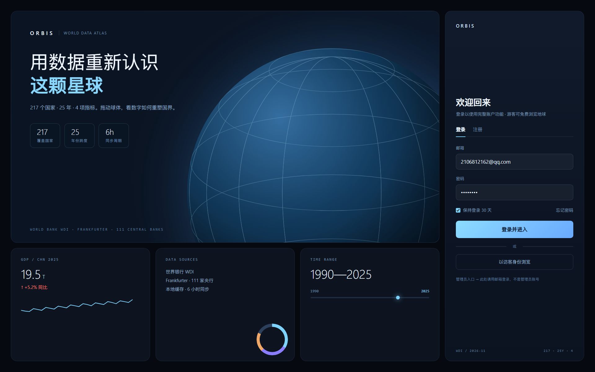

五种结构完全不同的方向 · 1440×900 实际渲染 · 点击缩略图打开可编辑 HTML

巨型半透明玻璃球 + 浮动数据胶囊，消费级产品的通透质感。

CRT 绿字点阵球与命令行输入，完全跳出常规网页登录框。

冷白数据台：细网格、真实数据表与蓝色强调，最像分析产品。

工程蓝图登录页：表单为主视觉，底部独立琥珀色「管理员登录 /admin」入口。

Bento 卡片墙：表单只是其中一格，先看到产品再登录。